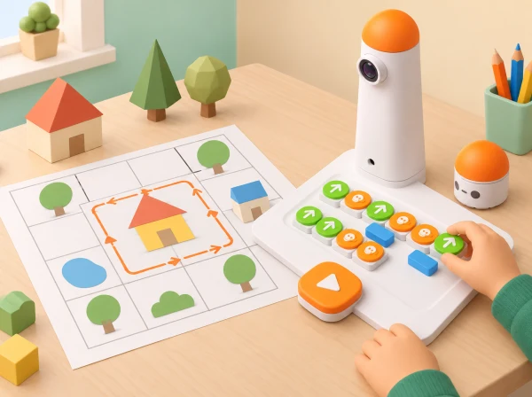

Quantes ordres necessitem per dibuixar el contorn d’una casa i com podem simplificar el programa quan repetim moviments?
Relacionar trajectòries, girs, formes planes i repetició; representar un programa amb peces físiques i explicar-ne l’estructura.
Reviseu quins blocs i accessoris inclou el Coding Set del centre. Prepareu una graella pròpia, targetes de casa sense text, paper quadriculat i una banda per registrar les peces d’ordres.
Valora si l’alumnat descompon formes en trams, usa les ordres del kit amb orientació coherent, detecta una errada i comunica com ha simplificat o aclarit el programa.
Oferiu formes grans, plantilla amb el punt inicial marcat i menys trams. Permeteu una predicció amb fitxa o dibuix abans de manipular blocs, i proposeu més d’una solució correcta.
Adapta MatataBot’s Cozy House amb el disseny d’un plànol propi, formes, moviments i bucles, i amplia la seqüència amb Draw triangles: gir exterior de 120° per traçar un triangle equilàter, contrast entre angles interiors i exteriors i exploració de triangles rectangles i obtusangles. El traçat directe amb retolador requereix Artist Add-On; amb el Coding Set base, el robot recorre una graella i l’alumnat representa la figura en paper. No reutilitza les imatges ni el mapa oficial.